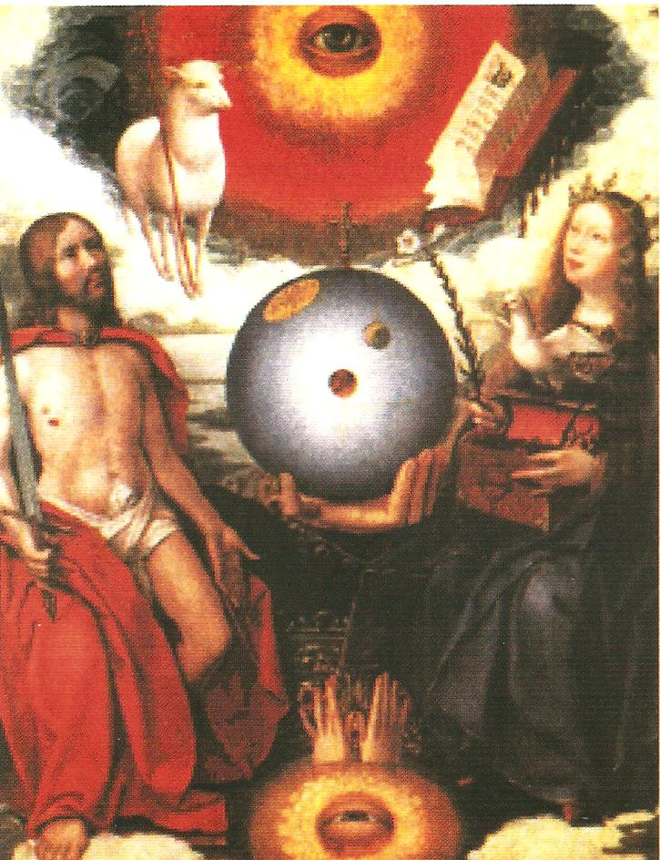

Метод Байджанаме
В 2004 году сложился уникальный Метод "Байджанаме" Альтернативной психологии, которую разработал Яшар Ибадов (г. Баку). Альтернативная психология изучает вопросы состояния и взаимодействия живых систем и их отражение в фазовых портретах, как зеркальных отображений фазовых превращений системы во время. Альтернативная психология и разработанная нами Теория Причинности взаимо дополняют и взаимо развивают теоретическую базу и практическую работу каждого из названных подходов к исследованию свойств живых систем. Их взаимодействие позволило сформулировать следующее определение: Причинность - это атрибутивное свойство самой Жизни и содержание живой системы как формы Жизни.
Большой интерес представляет фазовый портрет Одина, полученный профессором Яшаром Ибадовым 15 февраля 2003 года в Баку, на котором
впервые получены облики Одина, Ноя и Лилит - первой жещины, сотворенной по образу и подобию Божию, но поднявшей мятеж против своего Творца; как видно
из фазового портрета, Лилит стала без образной, потеряв Образ Божий.
Весь рисунок находится в Руке Бога и в поле Крыльев и Тела Голубя - зримого
образа Святого Духа и проявляемого Им Со-Творчества. Рука Бога открывает рисунок фазового портрета (слева наверху), причем в пальцах читается слово "Бог"
на русском и арабском языках и видно число 50 с Руной Ж в нуле, принесенные ветром и морской волной.
Морская волна выносит цифру 5 и Руну М : именно в
условиях Морского Путешествия Рука Бога проявляет пять Мастеров, одним из которых несомненно является и профессор Яшар Ибадов. Число 551 показывает
год (до н.э.) получения рун Одином, что совпадает с историческими сведениями. Цифры 5 и 1 оказались предопределенными и при Смене Времени,
и при Втором Рождении - получении новой духовной монады - ТИ БЧЖЪ ОДИН .
Надписи "Один" и "Ной" идут на русском языке. Внизу картины символически зашифрозано имя и фамилия третьего воплощения линии Ной - Один. Время указано звездой. Слово
"Оц" на древнетюркском языке означает "огонь", а "Дин" - "религия".
Лучи, выходящие из Глаза Голубя, образовали 14 секторов во Времени, которые мы также
обнаружили и описали. Их свойства определяют условия созревания духа человека.
Божественное предназначение Рун - победа над смертью, что выражено сломанной ее косой. Кроме того, руны Одина заблокировали проявление Лилит через Слово: если портрет
перевернуть, то от области рта Лилит (буква Н) читается слово "Нися", что на арабском означает "женщина". Возможно, что это истинное имя Лилит, произношение которого в русском
языке было запрещено, на это указывает Вторая Рука Бога, закрывшая рот Лилит, но в языке оно должно было сохраниться (Нися - низ-зя - нельзя) и дало понятие "низ - низость". Лилит
запечатлела свое имя в названии города Ниса - покинутый Одином Асгард, в котором Рун не оказалось, потому что Лилит их уничтожила.
Мы обнаружили соответствие символа глаза на фазовом портрете Одина, образа на картине XVI века и изображения на фотографии, относящейся к нашему времени, фиксирующей
взрыв сверхновой звезды 27 декабря 2004 г. Взрыв сверхновой звезды на фазовом портрете
показан лучами света из Глаза Голубя, на картине - открывшимся Глазом Бога, от которого
закрывается глаз дьявола (внизу), окруженный иной материальностью, в которой гибнет человек. Вверху картины - Агнец и Его символ - бараний рог, который есть и на фазовом портрете
Одина (внизу посередине). Агнцу открыта Книга за семью печатями. Рука Бога поддерживает
Мироздание, тайны которого открыты Богородицей и постигаются Со-Творчеством (Святым
Духом). Чтение символов требует знания как западной, так и восточной (тюркской) культур,
что доказывает единство их духовных корней.
|

Картина 16 века |
Фото Наса назвали "Глаз Бога" |